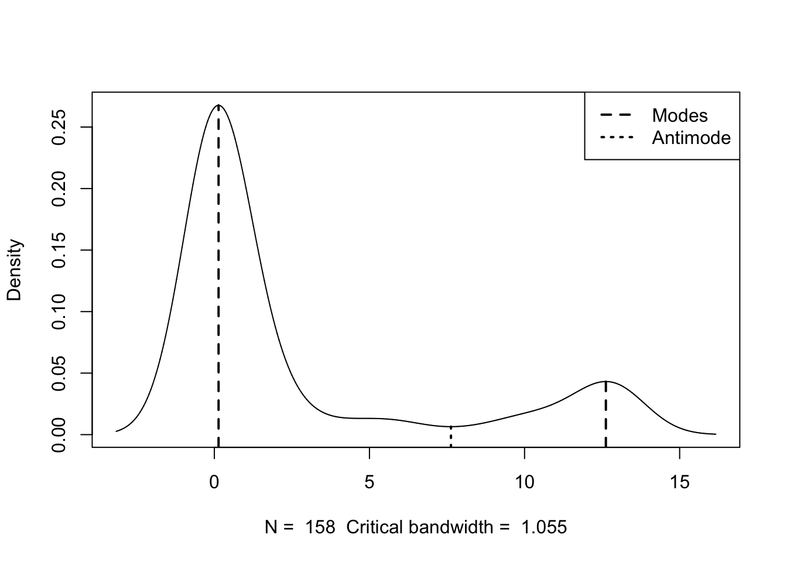
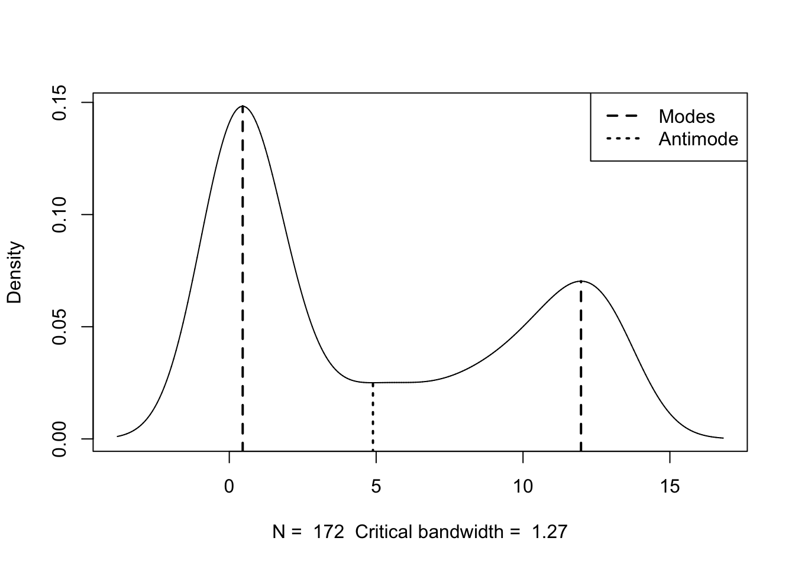
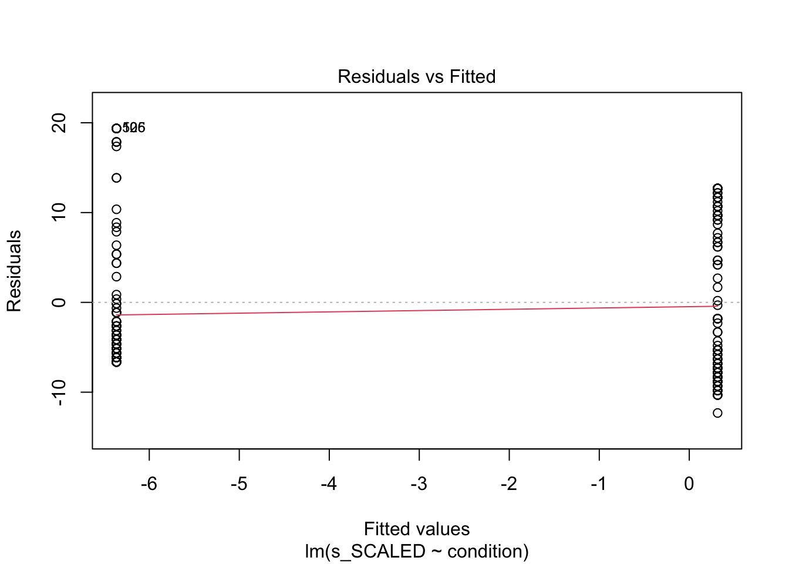
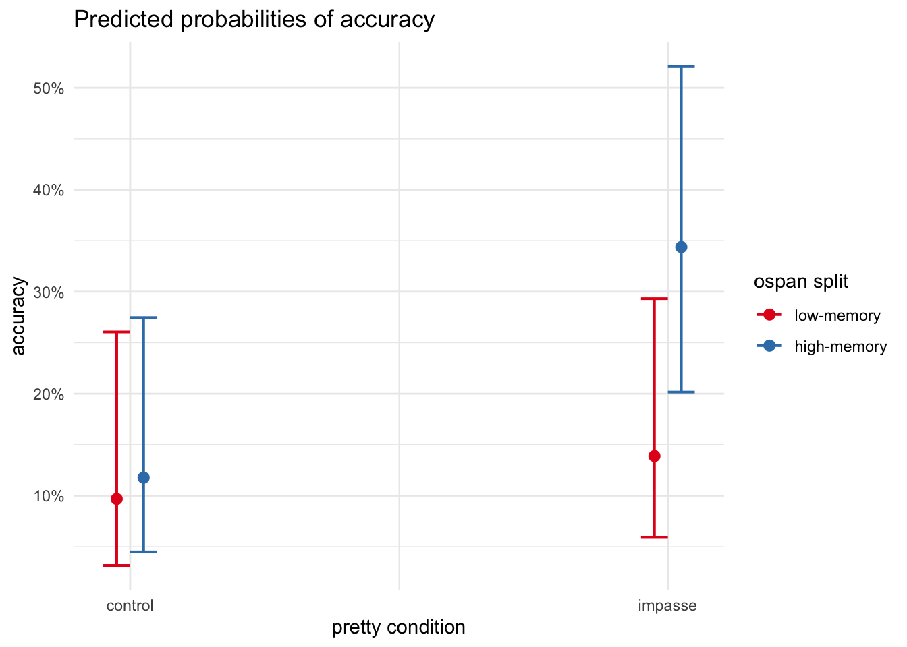
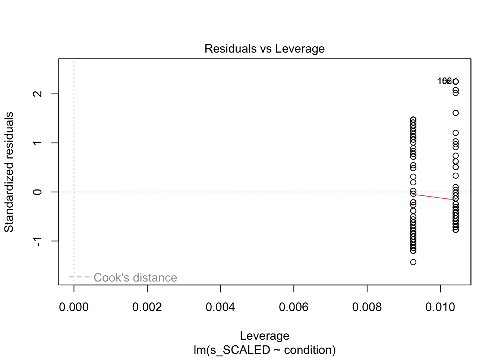
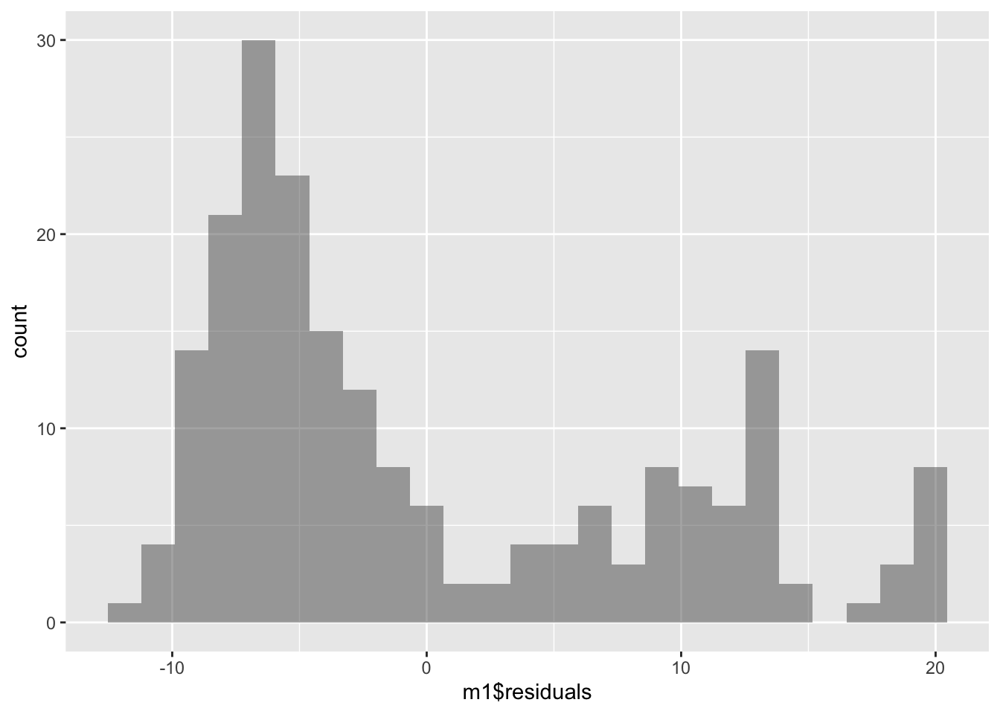

TODO
- response consistency - clarify core questions being asked
- review models already created in ARCHIVE?
- explore response consistency - fix references
The purpose of this notebook is exploratory analyses of data collected for study SGC3A.
Pre-Requisite
1_sgc3A_harmonize.qmd
2_sgc3A_scoring.qmd
CODE
library(multimode) #mode mass testslibrary(Hmisc) # %nin% operatorlibrary(ggpubr) #arrange plotslibrary(ggformula) #easy graphslibrary(report) #easystats reportinglibrary(see) #easystats visualizationlibrary(performance) #easystats model diagnosticslibrary(gmodels) #contingency table and CHISQRlibrary(vcd) #mosaic plotslibrary(vcdExtra) #mosaic plotslibrary(kableExtra) #printing tables library(tidyverse) #ALL THE THINGS#OUTPUT OPTIONSlibrary(dplyr, warn.conflicts =FALSE)options(dplyr.summarise.inform =FALSE)options(ggplot2.summarise.inform =FALSE)options(scipen=1, digits=3)
CODE
#IMPORT DATA df_items <-read_rds('analysis/SGC3A/data/2-scored-data/sgc3a_scored_items.rds')df_subjects <-read_rds('analysis/SGC3A/data/2-scored-data/sgc3a_scored_participants.rds')#SEPARATE ITEM DATA BY QUESTION TYPEdf_scaffold <- df_items %>%filter(q <6)df_test <- df_items %>%filter(q >6) %>%filter (q %nin%c(6,9))df_nondiscrim <- df_items %>%filter (q %in%c(6,9))
Exploratory Questions
Consistency | How consistent are learners in their interpretation of the graph? Do they adopt an interpretation on the first question and hold constant? Or do they change interpretations from question to question? Are there any interpretations that serve as ‘absorbing states’ (i.e. once encountered, the learner does not exist this state).
Time Course of Exploration | What is the relationship between response accuracy (and interpretation) and time spent on each item?
Can exploration strategies be derived from mouse cursor activity?
does response time predict interpretation vs. non interpretation?
Mass Movement
“movement of mass” from one mode to another
Considering only families of unimodal distributions, the most probably distribution (as predicted by package performance) is negative-binomial.
Warning in multimode::modetest(df$s_NABS): A modification of the data was made
in order to compute the excess mass or the dip statistic
Ameijeiras-Alonso et al. (2019) excess mass test
data: df$s_NABS
Excess mass = 0.09, p-value <2e-16
alternative hypothesis: true number of modes is greater than 1
Warning in multimode::locmodes(df$s_NABS, mod0 = n_modes, display = TRUE): If
the density function has an unbounded support, artificial modes may have been
created in the tails

Estimated location
Modes: 0.136 12.6
Antimode: 7.63
Estimated value of the density
Modes: 0.268 0.0432
Antimode: 0.00648
Critical bandwidth: 1.05
Warning in multimode::modetest(df$s_NABS): A modification of the data was made
in order to compute the excess mass or the dip statistic
Ameijeiras-Alonso et al. (2019) excess mass test
data: df$s_NABS
Excess mass = 0.1, p-value <2e-16
alternative hypothesis: true number of modes is greater than 1
Warning in multimode::locmodes(df$s_NABS, mod0 = n_modes, display = TRUE): If
the density function has an unbounded support, artificial modes may have been
created in the tails

Estimated location
Modes: 0.456 12
Antimode: 4.89
Estimated value of the density
Modes: 0.148 0.0703
Antimode: 0.025
Critical bandwidth: 1.27
RESPONSE CONSISTENCY
TODO
XYZ
XYZ
XYZ
Research Question
Does the frequency of correct (vs) incorrect responses on the first question differ by condition? [Is response accuracy independent of condition?]
Analysis Strategy
Chi-Square test of independence on outcome score_niceABS by condition for df_items where q == 1
Justification
(0) simplest method to examine independence of two categorical factors; logistic regression is recommended for binomial ~ continuous
(1) independence assumption : as we only consider responses on the first question, each observation corresponds to an individual subject, and are thus independent
(2) frequency size assumption : expected frequency in each cell of the contingency table is greater than 5 (more than 5 correct , more than 5 incorrect responses)
Steps
(1) Express raw data as contingency table & visualize
(2) Calculate Chi-Squared Statistic and p-value
(3) Interpret Odds-Ratio as effect size
Inference
Lab A Pearson’s Chi-squared test (of independence) indicates a relationship between response accuracy on the first question and experimental condition approaching statistical significance, \(\chi^2\) (1) = 10.3, p = 0.07. Thus we have insufficient evidence to reject the null hypothesis that the odds ratio is equal to 1. In this particular data sample, the sample odds ratio 2.18 indicates that the odds of producing a correct response on the first question were 2.18 times greater if a subject was in the impasse condition, than if the control condition (Odds Ratio = 2.18, p = 0.055, 95% CI [0.982, +Inf]).
Online A Pearson’s Chi-squared test (of independence) indicates a statistically significant relationship between response accuracy on the first question and experimental condition, \(\chi^2\) (1) = 7.26, p = 0.009. Thus we have sufficient evidence to reject the null hypothesis that the odds ratio is equal to 1. The sample odds ratio = 2.68 indicates that the odds of producing a correct response on the first question were 2.68 times greater if a subject was in the impasse condition, than in the control condition (Odds Ratio = 2.68, p = 0.005, 95% CI [1.37, +Inf]).
CODE
#FITER THE DATASETdf = df_items %>%filter(q==1) #PROPORTIONAL BAR CHARTgf_props(~score_niceABS, data = df, fill =~mode) %>%gf_facet_grid(mode~condition, labeller = label_both) +labs(x ="Correct Response on Q 1",title ="Accuracy on First Question by Condition (Both Modalities)",subtitle="Impasse Condition yields a greater proportion of correct responses than control ")+theme_minimal()+theme(legend.position ="none")
CODE
#MOSAIC PLOTvcd::mosaic(main="Accuracy on First Question by Condition (Both Modalities)",data = df, score_niceABS ~ condition, rot_labels=c(0,90,0,0),offset_varnames =c(left =4.5), offset_labels =c(left =-0.5),just_labels ="right",spacing =spacing_dimequal(unit(1:2, "lines")))
CODE
#PRINT CONTINGENCY TABLEtitle ="Proportion of Correct Responses On First Item (Both Modalities)"item.contingency <- df %>% dplyr::select(condition, score_niceABS) %>%table() %>%prop.table() %>%addmargins()item.contingency %>%kbl (caption = title) %>%kable_classic()
Proportion of Correct Responses On First Item (Both Modalities)
0
1
Sum
111
0.412
0.067
0.479
121
0.373
0.148
0.521
Sum
0.785
0.215
1.000
CODE
df = df_items %>%filter(q==1) %>%filter(mode =="lab-synch")CrossTable( x = df$condition, y = df$score_niceABS, fisher =TRUE, chisq=TRUE, expected =TRUE, sresid =TRUE)
Cell Contents
|-------------------------|
| N |
| Expected N |
| Chi-square contribution |
| N / Row Total |
| N / Col Total |
| N / Table Total |
|-------------------------|
Total Observations in Table: 126
| df$score_niceABS
df$condition | 0 | 1 | Row Total |
-------------|-----------|-----------|-----------|
111 | 52 | 10 | 62 |
| 47.730 | 14.270 | |
| 0.382 | 1.278 | |
| 0.839 | 0.161 | 0.492 |
| 0.536 | 0.345 | |
| 0.413 | 0.079 | |
-------------|-----------|-----------|-----------|
121 | 45 | 19 | 64 |
| 49.270 | 14.730 | |
| 0.370 | 1.238 | |
| 0.703 | 0.297 | 0.508 |
| 0.464 | 0.655 | |
| 0.357 | 0.151 | |
-------------|-----------|-----------|-----------|
Column Total | 97 | 29 | 126 |
| 0.770 | 0.230 | |
-------------|-----------|-----------|-----------|
Statistics for All Table Factors
Pearson's Chi-squared test
------------------------------------------------------------
Chi^2 = 3.27 d.f. = 1 p = 0.0707
Pearson's Chi-squared test with Yates' continuity correction
------------------------------------------------------------
Chi^2 = 2.55 d.f. = 1 p = 0.111
Fisher's Exact Test for Count Data
------------------------------------------------------------
Sample estimate odds ratio: 2.18
Alternative hypothesis: true odds ratio is not equal to 1
p = 0.0909
95% confidence interval: 0.86 5.84
Alternative hypothesis: true odds ratio is less than 1
p = 0.979
95% confidence interval: 0 5.03
Alternative hypothesis: true odds ratio is greater than 1
p = 0.0547
95% confidence interval: 0.982 Inf
Inspecting the output of the Chi-Squared test, we first see that we meet the assumption of expected frequency in each cell (indicated by the second row in each box, ‘Expected N’. The model predicts more than 5 observations in each cell.) The Pearson’s Chi-squared test (of independence) indicates a relationship between response accuracy on the first question and experimental condition approaching statistical significance, \(\chi^2\) (1) = 10.3, p = 0.07. Thus we have insufficient evidence to reject the null hypothesis that the odds ratio is not equal to 1. In this particular data sample, the odds ratio 2.18 indicates that the odds of producing a correct response on the first question were 2.18 times greater if a subject was in the impasse condition, than in the control condition (Odds Ratio = 2.18, p = 0.055, 95% CI [0.982, +Inf]).
CODE
df = df_items %>%filter(q==1) %>%filter(mode =="asynch")CrossTable( x = df$condition, y = df$score_niceABS, fisher =TRUE, chisq=TRUE, expected =TRUE, sresid =TRUE)
Cell Contents
|-------------------------|
| N |
| Expected N |
| Chi-square contribution |
| N / Row Total |
| N / Col Total |
| N / Table Total |
|-------------------------|
Total Observations in Table: 204
| df$score_niceABS
df$condition | 0 | 1 | Row Total |
-------------|-----------|-----------|-----------|
111 | 84 | 12 | 96 |
| 76.235 | 19.765 | |
| 0.791 | 3.050 | |
| 0.875 | 0.125 | 0.471 |
| 0.519 | 0.286 | |
| 0.412 | 0.059 | |
-------------|-----------|-----------|-----------|
121 | 78 | 30 | 108 |
| 85.765 | 22.235 | |
| 0.703 | 2.711 | |
| 0.722 | 0.278 | 0.529 |
| 0.481 | 0.714 | |
| 0.382 | 0.147 | |
-------------|-----------|-----------|-----------|
Column Total | 162 | 42 | 204 |
| 0.794 | 0.206 | |
-------------|-----------|-----------|-----------|
Statistics for All Table Factors
Pearson's Chi-squared test
------------------------------------------------------------
Chi^2 = 7.26 d.f. = 1 p = 0.00707
Pearson's Chi-squared test with Yates' continuity correction
------------------------------------------------------------
Chi^2 = 6.35 d.f. = 1 p = 0.0117
Fisher's Exact Test for Count Data
------------------------------------------------------------
Sample estimate odds ratio: 2.68
Alternative hypothesis: true odds ratio is not equal to 1
p = 0.00894
95% confidence interval: 1.23 6.17
Alternative hypothesis: true odds ratio is less than 1
p = 0.998
95% confidence interval: 0 5.42
Alternative hypothesis: true odds ratio is greater than 1
p = 0.00539
95% confidence interval: 1.37 Inf
Inspecting the output of the Chi-Squared test, we first see that we meet the assumption of expected frequency in each cell (indicated by the second row in each box, ‘Expected N’. The model predicts more than 5 observations in each cell.) The Pearson’s Chi-squared test (of independence) indicates a statistically significant relationship between response accuracy on the first question and experimental condition, \(\chi^2\) (1) = 7.26, p = 0.009. Thus we have sufficient evidence to reject the null hypothesis that the odds ratio is not equal to 1. The odds ratio = 2.68 indicates that the odds of producing a correct response on the first question were 2.68 times greater if a subject was in the impasse condition, than in the control condition (Odds Ratio = 2.68, p = 0.005, 95% CI [1.37, +Inf]).
COPIED FROM 3
Does the IMPASSE condition more accurate interpretation?
To address this question we assess how much variance in cumulative (absolute) score is explained by experimental condition.
CODE
#SCORE predicted by CONDITIONm1 <-lm(s_SCALED ~ condition, data = df_subjects %>%filter(mode=="lab-synch"))paste("Model")
[1] "Model"
CODE
summary(m1)
Call:
lm(formula = s_SCALED ~ condition, data = df_subjects %>% filter(mode ==
"lab-synch"))
Residuals:
Min 1Q Median 3Q Max
-12.51 -6.48 -4.48 9.38 19.52
Coefficients:
Estimate Std. Error t value Pr(>|t|)
(Intercept) -6.52 1.19 -5.48 2.3e-07 ***
condition121 7.53 1.67 4.51 1.5e-05 ***
---
Signif. codes: 0 '***' 0.001 '**' 0.01 '*' 0.05 '.' 0.1 ' ' 1
Residual standard error: 9.38 on 124 degrees of freedom
Multiple R-squared: 0.141, Adjusted R-squared: 0.134
F-statistic: 20.3 on 1 and 124 DF, p-value: 0.0000151
CODE
paste("Partition Variance")
[1] "Partition Variance"
CODE
anova(m1)
Analysis of Variance Table
Response: s_SCALED
Df Sum Sq Mean Sq F value Pr(>F)
condition 1 1787 1787 20.3 0.000015 ***
Residuals 124 10910 88
---
Signif. codes: 0 '***' 0.001 '**' 0.01 '*' 0.05 '.' 0.1 ' ' 1
CODE
paste("Confidence Interval on Parameter Estimates")
For in-lab data collection an OLS linear regression predicting scaled score by experimental condition explains a statistically significant and moderate 15% variance in score (F(1,124) = 22.7, p < 0.001). The estimated beta coefficient (\(/beta\) = 7.88, 95% CI [4.61, 11.2]) predicts that participants in the impasse condition will on average score around 8 points (31%) higher than those in the control condition.
CODE
#SCORE predicted by CONDITIONm1 <-lm(s_SCALED ~ condition, data = df_subjects %>%filter(mode=="asynch"))paste("Model")
[1] "Model"
CODE
summary(m1)
Call:
lm(formula = s_SCALED ~ condition, data = df_subjects %>% filter(mode ==
"asynch"))
Residuals:
Min 1Q Median 3Q Max
-12.31 -6.63 -3.63 7.74 19.36
Coefficients:
Estimate Std. Error t value Pr(>|t|)
(Intercept) -6.365 0.883 -7.21 1.1e-11 ***
condition121 6.670 1.214 5.49 1.2e-07 ***
---
Signif. codes: 0 '***' 0.001 '**' 0.01 '*' 0.05 '.' 0.1 ' ' 1
Residual standard error: 8.65 on 202 degrees of freedom
Multiple R-squared: 0.13, Adjusted R-squared: 0.126
F-statistic: 30.2 on 1 and 202 DF, p-value: 1.17e-07
CODE
paste("Partition Variance")
[1] "Partition Variance"
CODE
anova(m1)
Analysis of Variance Table
Response: s_SCALED
Df Sum Sq Mean Sq F value Pr(>F)
condition 1 2261 2261 30.2 1.2e-07 ***
Residuals 202 15128 75
---
Signif. codes: 0 '***' 0.001 '**' 0.01 '*' 0.05 '.' 0.1 ' ' 1
CODE
paste("Confidence Interval on Parameter Estimates")
For the online replication, an OLS linear regression model predicting scaled score by condition explains a statistically significant and moderate 14% of variance in absolute score (F(1,202) = 32.4, p < 0.001). The beta coefficient for condition indicates that on average, participants in the IMPASSE group scored 6.8 points higher on the task than those in the control condition (CI[4.43, 9.12]).
Note
From these models we can reasonably conclude that the impasse condition yields a reliable, moderate sized effect of improved interpretation on the graph reading tasks.
Item-Level Performance
Individual differences with a mixed model.
Model Peeking
TODO
multiple regression with condition and response time
CODE
library(supernova)
Attaching package: 'supernova'
The following object is masked from 'package:scales':
number
CODE
library(report)library(lmerTest)
Loading required package: lme4
Loading required package: Matrix
Attaching package: 'Matrix'
The following objects are masked from 'package:tidyr':
expand, pack, unpack
Attaching package: 'lmerTest'
The following object is masked from 'package:lme4':
lmer
The following object is masked from 'package:stats':
step
CODE
library(lme4)m1 <-lm( s_SCALED ~ condition, data = df_subjects %>%filter(mode=='asynch'))m1
Call:
lm(formula = s_SCALED ~ condition, data = df_subjects %>% filter(mode ==
"asynch"))
Residuals:
Min 1Q Median 3Q Max
-12.31 -6.63 -3.63 7.74 19.36
Coefficients:
Estimate Std. Error t value Pr(>|t|)
(Intercept) -6.365 0.883 -7.21 1.1e-11 ***
condition121 6.670 1.214 5.49 1.2e-07 ***
---
Signif. codes: 0 '***' 0.001 '**' 0.01 '*' 0.05 '.' 0.1 ' ' 1
Residual standard error: 8.65 on 202 degrees of freedom
Multiple R-squared: 0.13, Adjusted R-squared: 0.126
F-statistic: 30.2 on 1 and 202 DF, p-value: 1.17e-07
CODE
anova(m1)
Analysis of Variance Table
Response: s_SCALED
Df Sum Sq Mean Sq F value Pr(>F)
condition 1 2261 2261 30.2 1.2e-07 ***
Residuals 202 15128 75
---
Signif. codes: 0 '***' 0.001 '**' 0.01 '*' 0.05 '.' 0.1 ' ' 1
CODE
superanova(m1)
Analysis of Variance Table (Type III SS)
Model: s_SCALED ~ condition
SS df MS F PRE p
----- --------------- | --------- --- -------- ------ ------ -----
Model (error reduced) | 2261.177 1 2261.177 30.193 0.1300 .0000
Error (from model) | 15128.156 202 74.892
----- --------------- | --------- --- -------- ------ ------ -----
Total (empty model) | 17389.333 203 85.662
CODE
plot(m1)



CODE
gf_histogram(~s_SCALED, data = df_subjects)
CODE
gf_histogram(~m1$residuals)

CODE
#Assess assumption of independence of errors#DW statistic should be close to 2library(car)
Loading required package: carData
Attaching package: 'carData'
The following object is masked from 'package:vcdExtra':
Burt
Attaching package: 'car'
The following object is masked from 'package:dplyr':
recode
The following object is masked from 'package:purrr':
some
CODE
durbinWatsonTest(m1)
lag Autocorrelation D-W Statistic p-value
1 -0.00262 1.99 0.968
Alternative hypothesis: rho != 0
CODE
#Test for equality of variance#H0 is equality; p > 0.05 infer you can't reject nullleveneTest(m1)
Levene's Test for Homogeneity of Variance (center = median)
Df F value Pr(>F)
group 1 6.3 0.013 *
202
---
Signif. codes: 0 '***' 0.001 '**' 0.01 '*' 0.05 '.' 0.1 ' ' 1
A simple linear regression model predicting cumulative scaled score (at subject level) by condition explains 13% of the total variance, F(1,329) = 47.8, p < 0.001. The model predicts that participants in the impasse condition will score on average 6.38 points higher than those in the control condition, 95% CI [4.56, 8.19].
CODE
t.test(s_SCALED ~ condition, data = df_subjects)
Welch Two Sample t-test
data: s_SCALED by condition
t = -7, df = 325, p-value = 7e-12
alternative hypothesis: true difference in means between group 111 and group 121 is not equal to 0
95 percent confidence interval:
-8.93 -5.06
sample estimates:
mean in group 111 mean in group 121
-6.427 0.567
CODE
#%>% report()
CODE
# report_participants(df_subjects)m1 %>%report()
Warning: 'data_findcols()' is deprecated and will be removed in a future update.
Its usage is discouraged. Please use 'data_find()' instead.
Warning: 'data_findcols()' is deprecated and will be removed in a future update.
Its usage is discouraged. Please use 'data_find()' instead.
Warning: 'data_findcols()' is deprecated and will be removed in a future update.
Its usage is discouraged. Please use 'data_find()' instead.
We fitted a linear model (estimated using OLS) to predict s_SCALED with condition (formula: s_SCALED ~ condition). The model explains a statistically significant and moderate proportion of variance (R2 = 0.13, F(1, 202) = 30.19, p < .001, adj. R2 = 0.13). The model's intercept, corresponding to condition = 111, is at -6.36 (95% CI [-8.11, -4.62], t(202) = -7.21, p < .001). Within this model:
- The effect of condition [121] is statistically significant and positive (beta = 6.67, 95% CI [4.28, 9.06], t(202) = 5.49, p < .001; Std. beta = 0.72, 95% CI [0.46, 0.98])
Standardized parameters were obtained by fitting the model on a standardized version of the dataset. 95% Confidence Intervals (CIs) and p-values were computed using the Wald approximation.
CODE
anova(m1) %>%report()
For one-way between subjects designs, partial eta squared is equivalent to eta squared.
Returning eta squared.
Warning: 'data_findcols()' is deprecated and will be removed in a future update.
Its usage is discouraged. Please use 'data_find()' instead.
The ANOVA suggests that:
- The main effect of condition is statistically significant and medium (F(1, 202) = 30.19, p < .001; Eta2 = 0.13, 95% CI [0.07, 1.00])
Effect sizes were labelled following Field's (2013) recommendations.
CODE
#significant intercept means that group is significantly different than zero
CODE
#logistic regression on on scaled df_subjects because residuals not normal in lm?mlog <-glm(s_SCALED ~ condition , data = df_subjects, family = gaussian)summary(mlog)
Call:
glm(formula = s_SCALED ~ condition, family = gaussian, data = df_subjects)
Deviance Residuals:
Min 1Q Median 3Q Max
-12.57 -6.57 -3.82 8.43 19.43
Coefficients:
Estimate Std. Error t value Pr(>|t|)
(Intercept) -6.427 0.709 -9.06 < 2e-16 ***
condition121 6.994 0.982 7.12 6.8e-12 ***
---
Signif. codes: 0 '***' 0.001 '**' 0.01 '*' 0.05 '.' 0.1 ' ' 1
(Dispersion parameter for gaussian family taken to be 79.4)
Null deviance: 30088 on 329 degrees of freedom
Residual deviance: 26059 on 328 degrees of freedom
AIC: 2384
Number of Fisher Scoring iterations: 2
CODE
report(mlog)
Warning: 'data_findcols()' is deprecated and will be removed in a future update.
Its usage is discouraged. Please use 'data_find()' instead.
Warning: 'data_findcols()' is deprecated and will be removed in a future update.
Its usage is discouraged. Please use 'data_find()' instead.
Warning: 'data_findcols()' is deprecated and will be removed in a future update.
Its usage is discouraged. Please use 'data_find()' instead.
We fitted a linear model (estimated using ML) to predict s_SCALED with condition (formula: s_SCALED ~ condition). The model's explanatory power is moderate (R2 = 0.13). The model's intercept, corresponding to condition = 111, is at -6.43 (95% CI [-7.82, -5.04], t(328) = -9.06, p < .001). Within this model:
- The effect of condition [121] is statistically significant and positive (beta = 6.99, 95% CI [5.07, 8.92], t(328) = 7.12, p < .001; Std. beta = 0.73, 95% CI [0.53, 0.93])
Standardized parameters were obtained by fitting the model on a standardized version of the dataset. 95% Confidence Intervals (CIs) and p-values were computed using
CODE
#logistic regression on niceABS by condition#pretends that questions are independent and not from same subjects INVALIDmlog <-glm(score_niceABS ~ condition , data = df_items %>%filter(q<6), family =binomial())summary(mlog)
Call:
glm(formula = score_niceABS ~ condition, family = binomial(),
data = df_items %>% filter(q < 6))
Deviance Residuals:
Min 1Q Median 3Q Max
-0.980 -0.980 -0.649 1.389 1.823
Coefficients:
Estimate Std. Error z value Pr(>|z|)
(Intercept) -1.4508 0.0907 -15.99 <2e-16 ***
condition121 0.9672 0.1147 8.43 <2e-16 ***
---
Signif. codes: 0 '***' 0.001 '**' 0.01 '*' 0.05 '.' 0.1 ' ' 1
(Dispersion parameter for binomial family taken to be 1)
Null deviance: 1986.2 on 1649 degrees of freedom
Residual deviance: 1911.3 on 1648 degrees of freedom
AIC: 1915
Number of Fisher Scoring iterations: 4
CODE
report(mlog)
Warning: 'data_findcols()' is deprecated and will be removed in a future update.
Its usage is discouraged. Please use 'data_find()' instead.
Warning: 'data_findcols()' is deprecated and will be removed in a future update.
Its usage is discouraged. Please use 'data_find()' instead.
Warning: 'data_findcols()' is deprecated and will be removed in a future update.
Its usage is discouraged. Please use 'data_find()' instead.
Warning: 'data_findcols()' is deprecated and will be removed in a future update.
Its usage is discouraged. Please use 'data_find()' instead.
Warning: 'data_findcols()' is deprecated and will be removed in a future update.
Its usage is discouraged. Please use 'data_find()' instead.
We fitted a logistic model (estimated using ML) to predict score_niceABS with condition (formula: score_niceABS ~ condition). The model's explanatory power is weak (Tjur's R2 = 0.04). The model's intercept, corresponding to condition = 111, is at -1.45 (95% CI [-1.63, -1.28], p < .001). Within this model:
- The effect of condition [121] is statistically significant and positive (beta = 0.97, 95% CI [0.74, 1.19], p < .001; Std. beta = 0.97, 95% CI [0.74, 1.19])
Standardized parameters were obtained by fitting the model on a standardized version of the dataset. 95% Confidence Intervals (CIs) and p-values were computed using
CODE
m2 <-lm( s_NABS ~ condition, data = df_subjects)m2
Call:
lm(formula = s_NABS ~ condition, data = df_subjects)
Residuals:
Min 1Q Median 3Q Max
-4.92 -3.67 -2.47 4.08 10.53
Coefficients:
Estimate Std. Error t value Pr(>|t|)
(Intercept) 2.468 0.384 6.43 4.4e-10 ***
condition121 2.456 0.531 4.62 5.5e-06 ***
---
Signif. codes: 0 '***' 0.001 '**' 0.01 '*' 0.05 '.' 0.1 ' ' 1
Residual standard error: 4.82 on 328 degrees of freedom
Multiple R-squared: 0.0611, Adjusted R-squared: 0.0583
F-statistic: 21.4 on 1 and 328 DF, p-value: 5.49e-06
CODE
anova(m2)
Analysis of Variance Table
Response: s_NABS
Df Sum Sq Mean Sq F value Pr(>F)
condition 1 497 497 21.4 5.5e-06 ***
Residuals 328 7629 23
---
Signif. codes: 0 '***' 0.001 '**' 0.01 '*' 0.05 '.' 0.1 ' ' 1
CODE
supernova(m2)
Analysis of Variance Table (Type III SS)
Model: s_NABS ~ condition
SS df MS F PRE p
----- --------------- | -------- --- ------- ------ ------ -----
Model (error reduced) | 496.765 1 496.765 21.357 0.0611 .0000
Error (from model) | 7629.359 328 23.260
----- --------------- | -------- --- ------- ------ ------ -----
Total (empty model) | 8126.124 329 24.699
A simple linear regression model predicting cumulative absolute score by condition explains 5% of variance, F(1,328) = 16.36, p < 0.001. The model predicts that subjects in the impasse condition will score on average 2 points higher than those in the control condition (Beta = 2.02, 95% CI [1.04, 3.00])
CODE
report(m2)
Warning: 'data_findcols()' is deprecated and will be removed in a future update.
Its usage is discouraged. Please use 'data_find()' instead.
Warning: 'data_findcols()' is deprecated and will be removed in a future update.
Its usage is discouraged. Please use 'data_find()' instead.
Warning: 'data_findcols()' is deprecated and will be removed in a future update.
Its usage is discouraged. Please use 'data_find()' instead.
We fitted a linear model (estimated using OLS) to predict s_NABS with condition (formula: s_NABS ~ condition). The model explains a statistically significant and weak proportion of variance (R2 = 0.06, F(1, 328) = 21.36, p < .001, adj. R2 = 0.06). The model's intercept, corresponding to condition = 111, is at 2.47 (95% CI [1.71, 3.22], t(328) = 6.43, p < .001). Within this model:
- The effect of condition [121] is statistically significant and positive (beta = 2.46, 95% CI [1.41, 3.50], t(328) = 4.62, p < .001; Std. beta = 0.49, 95% CI [0.28, 0.70])
Standardized parameters were obtained by fitting the model on a standardized version of the dataset. 95% Confidence Intervals (CIs) and p-values were computed using the Wald approximation.
CODE
m.m1 <-lmer( score_SCALED ~ (1+ condition|subject), data = df_items)
Warning in checkConv(attr(opt, "derivs"), opt$par, ctrl = control$checkConv, :
Model failed to converge with max|grad| = 0.00344864 (tol = 0.002, component 1)
CODE
m.m1
Linear mixed model fit by REML ['lmerModLmerTest']
Formula: score_SCALED ~ (1 + condition | subject)
Data: df_items
REML criterion at convergence: 9940
Random effects:
Groups Name Std.Dev. Corr
subject (Intercept) 0.620
condition121 0.865 -0.72
Residual 0.601
Number of obs: 4950, groups: subject, 330
Fixed Effects:
(Intercept)
-0.126
optimizer (nloptwrap) convergence code: 0 (OK) ; 0 optimizer warnings; 1 lme4 warnings
CODE
summary(m.m1)
Linear mixed model fit by REML. t-tests use Satterthwaite's method [
lmerModLmerTest]
Formula: score_SCALED ~ (1 + condition | subject)
Data: df_items
REML criterion at convergence: 9940
Scaled residuals:
Min 1Q Median 3Q Max
-2.902 -0.659 -0.299 0.533 2.718
Random effects:
Groups Name Variance Std.Dev. Corr
subject (Intercept) 0.384 0.620
condition121 0.748 0.865 -0.72
Residual 0.362 0.601
Number of obs: 4950, groups: subject, 330
Fixed effects:
Estimate Std. Error df t value Pr(>|t|)
(Intercept) -0.1259 0.0346 328.5075 -3.64 0.00032 ***
---
Signif. codes: 0 '***' 0.001 '**' 0.01 '*' 0.05 '.' 0.1 ' ' 1
optimizer (nloptwrap) convergence code: 0 (OK)
Model failed to converge with max|grad| = 0.00344864 (tol = 0.002, component 1)
CODE
report(m.m1)
Package 'merDeriv' needs to be installed to compute confidence intervals
for random effect parameters.
Warning: 'data_findcols()' is deprecated and will be removed in a future update.
Its usage is discouraged. Please use 'data_find()' instead.
Package 'merDeriv' needs to be installed to compute confidence intervals
for random effect parameters.
Warning: 'data_findcols()' is deprecated and will be removed in a future update.
Its usage is discouraged. Please use 'data_find()' instead.
Warning: 'data_findcols()' is deprecated and will be removed in a future update.
Its usage is discouraged. Please use 'data_find()' instead.
We fitted a constant (intercept-only) linear mixed model (estimated using REML and nloptwrap optimizer) to predict score_SCALED (formula: score_SCALED ~ 1). The model included condition and subject as random effects (formula: ~1 + condition | subject). . The model's intercept is at -0.13 (95% CI [-0.19, -0.06], t(4945) = -3.64, p < .001). Within this model:
- ()
Standardized parameters were obtained by fitting the model on a standardized version of the dataset. 95% Confidence Intervals (CIs) and p-values were computed using
CODE
m.m2 <-lmer( score_SCALED ~ (1+ condition|q), data = df_items)m.m2
Linear mixed model fit by REML ['lmerModLmerTest']
Formula: score_SCALED ~ (1 + condition | q)
Data: df_items
REML criterion at convergence: 11669
Random effects:
Groups Name Std.Dev. Corr
q (Intercept) 0.577
condition121 0.517 -0.93
Residual 0.778
Number of obs: 4950, groups: q, 15
Fixed Effects:
(Intercept)
0.0983
CODE
summary(m.m2)
Linear mixed model fit by REML. t-tests use Satterthwaite's method [
lmerModLmerTest]
Formula: score_SCALED ~ (1 + condition | q)
Data: df_items
REML criterion at convergence: 11669
Scaled residuals:
Min 1Q Median 3Q Max
-1.830 -0.732 -0.424 0.910 2.147
Random effects:
Groups Name Variance Std.Dev. Corr
q (Intercept) 0.333 0.577
condition121 0.267 0.517 -0.93
Residual 0.605 0.778
Number of obs: 4950, groups: q, 15
Fixed effects:
Estimate Std. Error df t value Pr(>|t|)
(Intercept) 0.0983 0.0570 14.0000 1.73 0.11
CODE
report(m.m2)
Package 'merDeriv' needs to be installed to compute confidence intervals
for random effect parameters.
Warning: 'data_findcols()' is deprecated and will be removed in a future update.
Its usage is discouraged. Please use 'data_find()' instead.
Package 'merDeriv' needs to be installed to compute confidence intervals
for random effect parameters.
Warning: 'data_findcols()' is deprecated and will be removed in a future update.
Its usage is discouraged. Please use 'data_find()' instead.
Warning: 'data_findcols()' is deprecated and will be removed in a future update.
Its usage is discouraged. Please use 'data_find()' instead.
We fitted a constant (intercept-only) linear mixed model (estimated using REML and nloptwrap optimizer) to predict score_SCALED (formula: score_SCALED ~ 1). The model included condition and q as random effects (formula: ~1 + condition | q). . The model's intercept is at 0.10 (95% CI [-0.01, 0.21], t(4945) = 1.73, p = 0.084). Within this model:
- ()
Standardized parameters were obtained by fitting the model on a standardized version of the dataset. 95% Confidence Intervals (CIs) and p-values were computed using
Warning in checkConv(attr(opt, "derivs"), opt$par, ctrl = control$checkConv, :
Model failed to converge with max|grad| = 0.0117282 (tol = 0.002, component 1)
CODE
m.m3 %>%summary()
Linear mixed model fit by REML. t-tests use Satterthwaite's method [
lmerModLmerTest]
Formula: score_SCALED ~ (1 + condition | q) + (1 + condition | subject)
Data: df_items
REML criterion at convergence: 8836
Scaled residuals:
Min 1Q Median 3Q Max
-3.796 -0.585 -0.083 0.662 3.431
Random effects:
Groups Name Variance Std.Dev. Corr
subject (Intercept) 0.3334 0.577
condition121 0.0951 0.308 -0.30
q (Intercept) 0.2445 0.494
condition121 0.1848 0.430 -0.90
Residual 0.2804 0.530
Number of obs: 4950, groups: subject, 330; q, 15
Fixed effects:
Estimate Std. Error df t value Pr(>|t|)
(Intercept) 0.0434 0.0706 24.8205 0.61 0.54
optimizer (nloptwrap) convergence code: 0 (OK)
Model failed to converge with max|grad| = 0.0117282 (tol = 0.002, component 1)
CODE
m.m3 %>%report()
Package 'merDeriv' needs to be installed to compute confidence intervals
for random effect parameters.
Warning: 'data_findcols()' is deprecated and will be removed in a future update.
Its usage is discouraged. Please use 'data_find()' instead.
Package 'merDeriv' needs to be installed to compute confidence intervals
for random effect parameters.
Warning: 'data_findcols()' is deprecated and will be removed in a future update.
Its usage is discouraged. Please use 'data_find()' instead.
Warning: 'data_findcols()' is deprecated and will be removed in a future update.
Its usage is discouraged. Please use 'data_find()' instead.
We fitted a constant (intercept-only) linear mixed model (estimated using REML and nloptwrap optimizer) to predict score_SCALED (formula: score_SCALED ~ 1). The model included condition, q and subject as random effects (formula: list(~1 + condition | q, ~1 + condition | subject)). . The model's intercept is at 0.04 (95% CI [-0.10, 0.18], t(4942) = 0.61, p = 0.539). Within this model:
- ()
Standardized parameters were obtained by fitting the model on a standardized version of the dataset. 95% Confidence Intervals (CIs) and p-values were computed using
---subtitle: 'Study SGC3A | 5 Exploratory Analyses'description : "5 Exploration"---\newpage# Exploratory Analyses {#sec-SGC3A-exploration}**TODO**\- response consistency - clarify core questions being asked\- review models already created in ARCHIVE?\- explore response consistency - fix references*The purpose of this notebook is exploratory analyses of data collected for study SGC3A.*+------------------------+| Pre-Requisite |+========================+| 1_sgc3A_harmonize.qmd\ || 2_sgc3A_scoring.qmd |+------------------------+```{r}#| label: SETUP#| warning : false#| message : falselibrary(multimode) #mode mass testslibrary(Hmisc) # %nin% operatorlibrary(ggpubr) #arrange plotslibrary(ggformula) #easy graphslibrary(report) #easystats reportinglibrary(see) #easystats visualizationlibrary(performance) #easystats model diagnosticslibrary(gmodels) #contingency table and CHISQRlibrary(vcd) #mosaic plotslibrary(vcdExtra) #mosaic plotslibrary(kableExtra) #printing tables library(tidyverse) #ALL THE THINGS#OUTPUT OPTIONSlibrary(dplyr, warn.conflicts =FALSE)options(dplyr.summarise.inform =FALSE)options(ggplot2.summarise.inform =FALSE)options(scipen=1, digits=3)``````{r}#| label: IMPORT-DATA#| warning : false#| message : false#IMPORT DATA df_items <-read_rds('analysis/SGC3A/data/2-scored-data/sgc3a_scored_items.rds')df_subjects <-read_rds('analysis/SGC3A/data/2-scored-data/sgc3a_scored_participants.rds')#SEPARATE ITEM DATA BY QUESTION TYPEdf_scaffold <- df_items %>%filter(q <6)df_test <- df_items %>%filter(q >6) %>%filter (q %nin%c(6,9))df_nondiscrim <- df_items %>%filter (q %in%c(6,9))```Exploratory QuestionsConsistency \| How consistent are learners in their interpretation of the graph? Do they adopt an interpretation on the first question and hold constant? Or do they change interpretations from question to question? Are there any interpretations that serve as 'absorbing states' (i.e. once encountered, the learner does not exist this state).Time Course of Exploration \| What is the relationship between response accuracy (and interpretation) and time spent on each item?Can exploration strategies be derived from mouse cursor activity?- does response time predict interpretation vs. non interpretation?#### Mass Movement"movement of mass" from one mode to anotherConsidering only families of unimodal distributions, the most probably distribution (as predicted by package `performance`) is negative-binomial.```{r}#| label: MASS-111df <- df_subjects %>%filter(condition==111)multimode::modetest(df$s_NABS)n_modes = multimode::nmodes(data = df$s_NABS, bw=2)multimode::locmodes(df$s_NABS,mod0 = n_modes, display =TRUE)``````{r}#| label: MASS-121df <- df_subjects %>%filter(condition==121)multimode::modetest(df$s_NABS)n_modes = multimode::nmodes(data = df$s_NABS, bw=2)multimode::locmodes(df$s_NABS,mod0 = n_modes, display =TRUE)```## RESPONSE CONSISTENCY**TODO**## XYZ### XYZ#### XYZ+-----------------------+---------------------------------------------------------------------------------------------------------------------------------------------------------------------------------------------------------------------------------------------------------------------------------------------------------------------------------------------------------------------------------------------------------------------------------------------------------------------------------------------------------------------------------------------------------------------------------------------------------------------------------------+| Research Question | Does the frequency of correct (vs) incorrect responses on the first question differ by condition? \[Is response accuracy independent of condition?\] |+=======================+=======================================================================================================================================================================================================================================================================================================================================================================================================================================================================================================================================================================================================================================+| **Analysis Strategy** | Chi-Square test of independence on outcome `score_niceABS` by `condition` for `df_items` where `q == 1` |+-----------------------+---------------------------------------------------------------------------------------------------------------------------------------------------------------------------------------------------------------------------------------------------------------------------------------------------------------------------------------------------------------------------------------------------------------------------------------------------------------------------------------------------------------------------------------------------------------------------------------------------------------------------------------+| **Justification** | \(0\) simplest method to examine independence of two categorical factors; logistic regression is recommended for binomial \~ continuous || | || | \(1\) independence assumption : as we only consider responses on the first question, each observation corresponds to an individual subject, and are thus independent || | || | \(2\) frequency size assumption : expected frequency in each cell of the contingency table is greater than 5 (more than 5 correct , more than 5 incorrect responses) |+-----------------------+---------------------------------------------------------------------------------------------------------------------------------------------------------------------------------------------------------------------------------------------------------------------------------------------------------------------------------------------------------------------------------------------------------------------------------------------------------------------------------------------------------------------------------------------------------------------------------------------------------------------------------------+| **Steps** | \(1\) Express raw data as contingency table & visualize || | || | \(2\) Calculate Chi-Squared Statistic and p-value || | || | \(3\) Interpret Odds-Ratio as effect size |+-----------------------+---------------------------------------------------------------------------------------------------------------------------------------------------------------------------------------------------------------------------------------------------------------------------------------------------------------------------------------------------------------------------------------------------------------------------------------------------------------------------------------------------------------------------------------------------------------------------------------------------------------------------------------+| **Inference** | **Lab** A Pearson's Chi-squared test (of independence) indicates a relationship between response accuracy on the first question and experimental condition approaching statistical significance, $\chi^2$ (1) = 10.3, p = 0.07. Thus we have insufficient evidence to reject the null hypothesis that the odds ratio is equal to 1. In this particular data sample, the sample odds ratio 2.18 indicates that the odds of producing a correct response on the first question were 2.18 times greater if a subject was in the impasse condition, than if the control condition (Odds Ratio = 2.18, p = 0.055, 95% CI \[0.982, +Inf\]). || | || | **Online** A Pearson's Chi-squared test (of independence) indicates a statistically significant relationship between response accuracy on the first question and experimental condition, $\chi^2$ (1) = 7.26, p = 0.009. Thus we have sufficient evidence to reject the null hypothesis that the odds ratio is equal to 1. The sample odds ratio = 2.68 indicates that the odds of producing a correct response on the first question were 2.68 times greater if a subject was in the impasse condition, than in the control condition (Odds Ratio = 2.68, p = 0.005, 95% CI \[1.37, +Inf\]). |+-----------------------+---------------------------------------------------------------------------------------------------------------------------------------------------------------------------------------------------------------------------------------------------------------------------------------------------------------------------------------------------------------------------------------------------------------------------------------------------------------------------------------------------------------------------------------------------------------------------------------------------------------------------------------+```{r}#| label: VIS-LR-Q1.tri.by.Cond#FITER THE DATASETdf = df_items %>%filter(q==1) #PROPORTIONAL BAR CHARTgf_props(~score_niceABS, data = df, fill =~mode) %>%gf_facet_grid(mode~condition, labeller = label_both) +labs(x ="Correct Response on Q 1",title ="Accuracy on First Question by Condition (Both Modalities)",subtitle="Impasse Condition yields a greater proportion of correct responses than control ")+theme_minimal()+theme(legend.position ="none")#MOSAIC PLOTvcd::mosaic(main="Accuracy on First Question by Condition (Both Modalities)",data = df, score_niceABS ~ condition, rot_labels=c(0,90,0,0),offset_varnames =c(left =4.5), offset_labels =c(left =-0.5),just_labels ="right",spacing =spacing_dimequal(unit(1:2, "lines")))#PRINT CONTINGENCY TABLEtitle ="Proportion of Correct Responses On First Item (Both Modalities)"item.contingency <- df %>% dplyr::select(condition, score_niceABS) %>%table() %>%prop.table() %>%addmargins()item.contingency %>%kbl (caption = title) %>%kable_classic()``````{r}#| label : TBL-Q1.TRI.by.COND-LABdf = df_items %>%filter(q==1) %>%filter(mode =="lab-synch")CrossTable( x = df$condition, y = df$score_niceABS, fisher =TRUE, chisq=TRUE, expected =TRUE, sresid =TRUE)```Inspecting the output of the Chi-Squared test, we first see that we meet the assumption of expected frequency in each cell (indicated by the second row in each box, 'Expected N'. The model predicts more than 5 observations in each cell.) The Pearson's Chi-squared test (of independence) indicates a relationship between response accuracy on the first question and experimental condition approaching statistical significance, $\chi^2$ (1) = 10.3, p = 0.07. Thus we have insufficient evidence to reject the null hypothesis that the odds ratio is not equal to 1. In this particular data sample, the odds ratio 2.18 indicates that the odds of producing a correct response on the first question were 2.18 times greater if a subject was in the impasse condition, than in the control condition (Odds Ratio = 2.18, p = 0.055, 95% CI \[0.982, +Inf\]).```{r}#| label : TBL-Q1.TRI.by.COND-ONLINEdf = df_items %>%filter(q==1) %>%filter(mode =="asynch")CrossTable( x = df$condition, y = df$score_niceABS, fisher =TRUE, chisq=TRUE, expected =TRUE, sresid =TRUE)```Inspecting the output of the Chi-Squared test, we first see that we meet the assumption of expected frequency in each cell (indicated by the second row in each box, 'Expected N'. The model predicts more than 5 observations in each cell.) The Pearson's Chi-squared test (of independence) indicates a statistically significant relationship between response accuracy on the first question and experimental condition, $\chi^2$ (1) = 7.26, p = 0.009. Thus we have sufficient evidence to reject the null hypothesis that the odds ratio is not equal to 1. The odds ratio = 2.68 indicates that the odds of producing a correct response on the first question were 2.68 times greater if a subject was in the impasse condition, than in the control condition (Odds Ratio = 2.68, p = 0.005, 95% CI \[1.37, +Inf\]).## COPIED FROM 3**Does the IMPASSE condition more accurate interpretation?**To address this question we assess how much variance in cumulative (absolute) score is explained by experimental condition.```{r}#| label: MODEL-scaled-score-LAB#SCORE predicted by CONDITIONm1 <-lm(s_SCALED ~ condition, data = df_subjects %>%filter(mode=="lab-synch"))paste("Model")summary(m1)paste("Partition Variance")anova(m1)paste("Confidence Interval on Parameter Estimates")confint(m1)# report(m1) #sanity check```**For in-lab data collection** an OLS linear regression predicting scaled score by experimental condition explains a statistically significant and moderate 15% variance in score (F(1,124) = 22.7, p \< 0.001). The estimated beta coefficient ($/beta$ = 7.88, 95% CI \[4.61, 11.2\]) predicts that participants in the impasse condition will on average score around 8 points (31%) higher than those in the control condition.```{r}#| label: MODEL-scaled-score-ONLINE#SCORE predicted by CONDITIONm1 <-lm(s_SCALED ~ condition, data = df_subjects %>%filter(mode=="asynch"))paste("Model")summary(m1)paste("Partition Variance")anova(m1)paste("Confidence Interval on Parameter Estimates")confint(m1)#report(m1) #sanity check```**For the online replication**, an OLS linear regression model predicting scaled score by condition explains a statistically significant and moderate 14% of variance in absolute score (F(1,202) = 32.4, p \< 0.001). The beta coefficient for condition indicates that on average, participants in the IMPASSE group scored 6.8 points higher on the task than those in the control condition (CI\[4.43, 9.12\]).::: callout-note**From these models we can reasonably conclude that the impasse condition yields a reliable, moderate sized effect of improved interpretation on the graph reading tasks.**:::## Item-Level PerformanceIndividual differences with a mixed model.## Model PeekingTODO- multiple regression with condition and response time```{r}library(supernova)library(report)library(lmerTest)library(lme4)m1 <-lm( s_SCALED ~ condition, data = df_subjects %>%filter(mode=='asynch'))m1summary(m1)anova(m1)superanova(m1)plot(m1)gf_histogram(~s_SCALED, data = df_subjects)gf_histogram(~m1$residuals)#Assess assumption of independence of errors#DW statistic should be close to 2library(car)durbinWatsonTest(m1)#Test for equality of variance#H0 is equality; p > 0.05 infer you can't reject nullleveneTest(m1)```A simple linear regression model predicting cumulative scaled score (at subject level) by condition explains 13% of the total variance, F(1,329) = 47.8, p \< 0.001. The model predicts that participants in the impasse condition will score on average 6.38 points higher than those in the control condition, 95% CI \[4.56, 8.19\].```{r}t.test(s_SCALED ~ condition, data = df_subjects)#%>% report()``````{r}# report_participants(df_subjects)m1 %>%report()anova(m1) %>%report()#significant intercept means that group is significantly different than zero``````{r}#logistic regression on on scaled df_subjects because residuals not normal in lm?mlog <-glm(s_SCALED ~ condition , data = df_subjects, family = gaussian)summary(mlog)report(mlog)``````{r}#logistic regression on niceABS by condition#pretends that questions are independent and not from same subjects INVALIDmlog <-glm(score_niceABS ~ condition , data = df_items %>%filter(q<6), family =binomial())summary(mlog)report(mlog)``````{r}m2 <-lm( s_NABS ~ condition, data = df_subjects)m2summary(m2)anova(m2)supernova(m2)```A simple linear regression model predicting cumulative absolute score by condition explains 5% of variance, F(1,328) = 16.36, p \< 0.001. The model predicts that subjects in the impasse condition will score on average 2 points higher than those in the control condition (Beta = 2.02, 95% CI \[1.04, 3.00\])```{r}report(m2)``````{r}m.m1 <-lmer( score_SCALED ~ (1+ condition|subject), data = df_items)m.m1summary(m.m1)report(m.m1)``````{r}m.m2 <-lmer( score_SCALED ~ (1+ condition|q), data = df_items)m.m2summary(m.m2)report(m.m2)``````{r}m.m3 <-lmer( score_SCALED ~ (1+ condition|q) + (1+condition|subject), data = df_items)m.m3 %>%summary() m.m3 %>%report()``````{r}anova(m.m1, m.m2, m.m3)```## RESOURCES